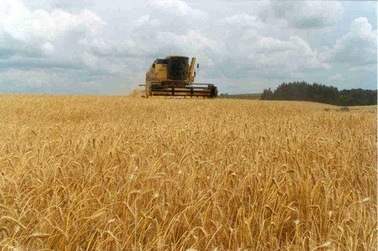
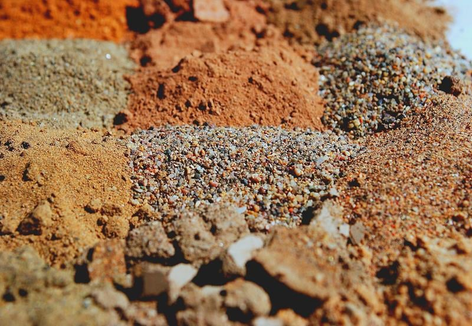
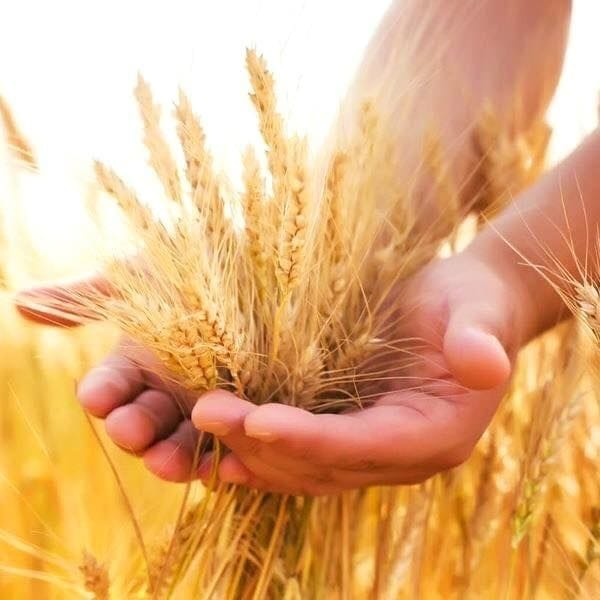
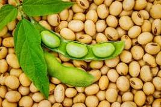
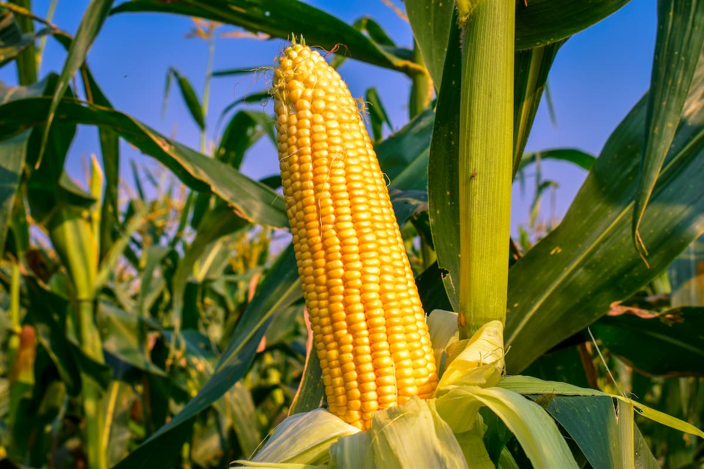
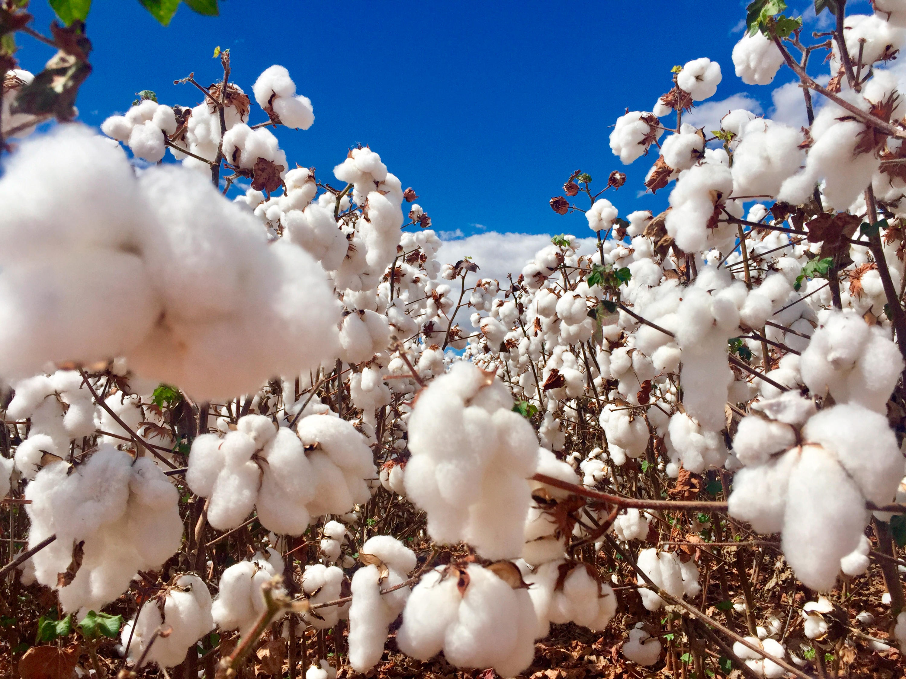
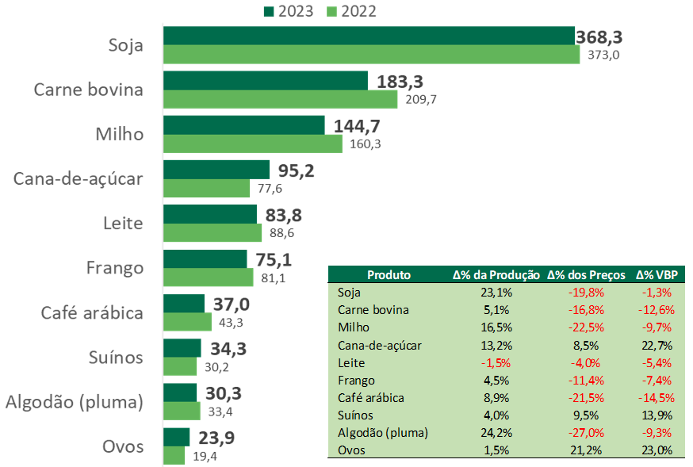

Bem-vindo ao mundo agrícola, esse site é
focado para os iniciantes, no qual visa aprender,
se informar e se desenvolver com as principais notícias e ideias da agricultura no Brasil.
Por onde começar?
A parte mais importante e mais difícil principalmente para novatos
é saber por onde deve começar, quais são as plantas mais fáceis de se cultivar?
Qual o solo ideal?Qual a temperatura ideal?, qual a estação certa para se plantar?,
a melhor forma para plantar. Essas dúvidas são normais e não são tão simples de se
obter as respostas. Por isso estamos aqui para te ajudar à encontrar a melhor maneira de
se produzir

Tipos de solos
No Brasil, encontramos uma ampla variedade de solos, cada um com suas características únicas.
Alguns são altamente adequados para determinados tipos de cultivo, enquanto outros exigem
cuidados específicos para serem produtivos. A escolha do solo certo é crucial para o
sucesso da plantação e é influenciada por fatores como localização, escolha de sementes e
condições ambientais. Neste artigo, exploraremos alguns dos melhores solos do Brasil e
onde eles se adaptam melhor.

TIPOS DE SOLOS
| Solos |
Região |
Qualidades |
Melhores plantas |
Detalhes |
| Terra roxa |
Sul e Centro-Oeste |
Rico em minerais e matéria orgânica |
soja, milho, café, cana de açúcar |
Solo profundos e bem drenados, com cores que se assemelha-se com o vermelho |
| Argissolos |
Centro-Oeste e Norte |
ricos em argila, boa fertilidade e ótima capacidade retenção de água |
café, algodão, feijão e frutas |
São encontrados principalmentes no cerrado |
| Neossolos |
Nordeste |
pouca profundidades |
pastagens, hortaliças e árvores |
solo jovem e poucos desenvolvidos |
| Chernossolos |
Sul |
rico em matéria orgânica |
trigo, milho, pastagens |
com terras de cores mais escuras |
| Areia Quartzosa |
litorânea e nordeste |
arenoso e baixa capacidade de retenção de água |
melancia abóboras |
perfeitos para plantas que toleram solos secos |
Estações do ano
As estações do ano marcam o tempo de plantar e o tempo de colher. Na primavera, por exemplo,
inicia o momento de colheita das lavouras de inverno no sul do Brasil. Também é a hora de preparar
o plantio das culturas de verão. Isso porque essa é uma estação de clima equilibrado, que dá
maiores chances de dias secos para a colheita e umidade ideal para o plantio.
Isso demonstra como os fatores climáticos que cada estação traz são importantes
para o planejamento da lavoura. Os três mais relevantes são:
Tempo de duração da luz do dia: a sensibilidade da planta ao tempo de exposição à radiação solar varia
a cada espécie. Essa energia é usada na fotossíntese, responsável pelo crescimento da biomassa do
vegetal. Como os dias na primavera e verão são mais longos, essa é uma relação entre estações do
ano e agricultura que deve ser levada em consideração na hora de iniciar uma cultura.
Temperatura do ar e do solo: plantas tropicais precisam de altas temperaturas durante todo o ano
(banana, café e cana-de-açúcar são exemplos). Desse modo, são muito sensíveis a geadas. Já outras,
como o centeio, podem até suportar até temperaturas negativas. Isso demonstra que algumas culturas
se adaptarão bem em regiões com estações do ano bem definidas, enquanto outras precisam de climas
como o da região norte e nordeste.
Umidade do ar: lugares secos, ou pouco úmidos, elevam excessivamente a transpiração das plantas.
Ao contrário, altos de umidade contribuem para a proliferação de fungos e bactérias que causam
doenças na lavoura.

Os plantios
trigo
O trigo é a gramínea cultivada em todo o mundo. Mundialmente, é a segunda maior cultura de cereais,
sendo a primeira o milho e a terceira o arroz. O grão de trigo é um alimento básico usado para
fazer farinha e, com esta, o pão, na alimentação dos animais domésticos e como ingrediente na
fabricação de cerveja.
O Rio Grande do Sul é o maior produtor do Brasil de trigo, com 2,3 milhões de toneladas em 2019.
O Paraná é o 2º maior produtor, com uma produção quase idêntica ao Rio Grande do Sul. Em 2019,
os 2 estados colheram juntos cerca de 85% da safra do Brasil, mas mesmo assim, o país é um dos
maiores importadores globais do cereal, tendo importado cerca 7 milhões de toneladas neste ano,
para atender a um consumo de 12 milhões de toneladas. A maior parte do trigo que o Brasil
importa vem da Argentina.

Soja
A soja, também conhecida como feijão-soja e feijão-chinês, é uma planta pertence à família Fabaceae,
família esta que compreende também plantas como o feijão, a lentilha e a ervilha. É empregada
na alimentação humana e animal. A palavra "soja" vem do japonês shoyu. A planta é originária da
China e do Japão. A planta é originária da China e do Japão. É um grão rico em proteínas.
Dentre os sais minerais, os mais presentes são: potássio, cálcio, magnésio, fósforo,
cobre e zinco. É fonte de algumas vitaminas do complexo B, como a riboflavina e a niacina,
e também em vitamina C (ácido ascórbico). Porém é pobre em vitamina A
e não contém vitamina D e B12.

Milho
Milho (Zea mays) é um cereal cultivado em grande parte do mundo e extensivamente utilizado como
alimento humano ou para ração animal devido às suas qualidades nutricionais. Todas as evidências
científicas levam a crer que seja uma planta de origem mexicana, já que a sua domesticação
começou de 7 500 a 12 000 anos atrás na área central do México. Tem um alto potencial
produtivo e é bastante responsivo à tecnologia. O seu cultivo geralmente é mecanizado,
se beneficiando muito de técnicas modernas de plantio e colheita. A produção mundial foi 817 milhões
de toneladas em 2009 - mais que arroz (678 milhões de toneladas) ou que trigo (682 milhões de toneladas).
O milho é cultivado em diversas regiões do mundo. O maior produtor mundial são os Estados Unidos.

Algodão
Algodão é uma fibra vegetal básica macia e fofa que cresce em uma cápsula, ou caixa protetora,
em torno das sementes das plantas de algodão do gênero Gossypium na família malva Malvaceae.
A fibra é quase celulose pura e pode conter porcentagens menores de ceras, gorduras, pectinas
e água. Em condições naturais, as cápsulas de algodão aumentarão a dispersão das sementes.

O Brasil
O Brasil é uma potência global no setor do agronegócio, consolidando-se como o nono maior produtor
agrícola do mundo. Este destaque é resultado de uma combinação de fatores como a vasta extensão
territorial, condições climáticas favoráveis e investimentos em tecnologia agrícola. O país se
sobressai particularmente nas exportações, ocupando a terceira posição mundial. Produtos como
soja, café, carne bovina e suco de laranja são alguns dos principais responsáveis por este
desempenho impressionante no mercado internacional. O agronegócio brasileiro não apenas
sustenta a economia nacional, mas também contribui significativamente para a segurança
alimentar global.
